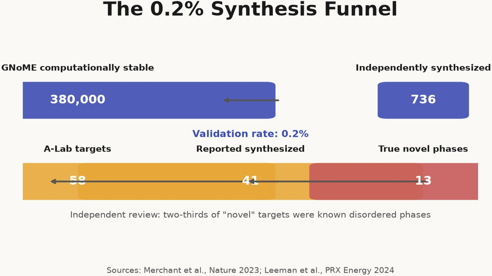
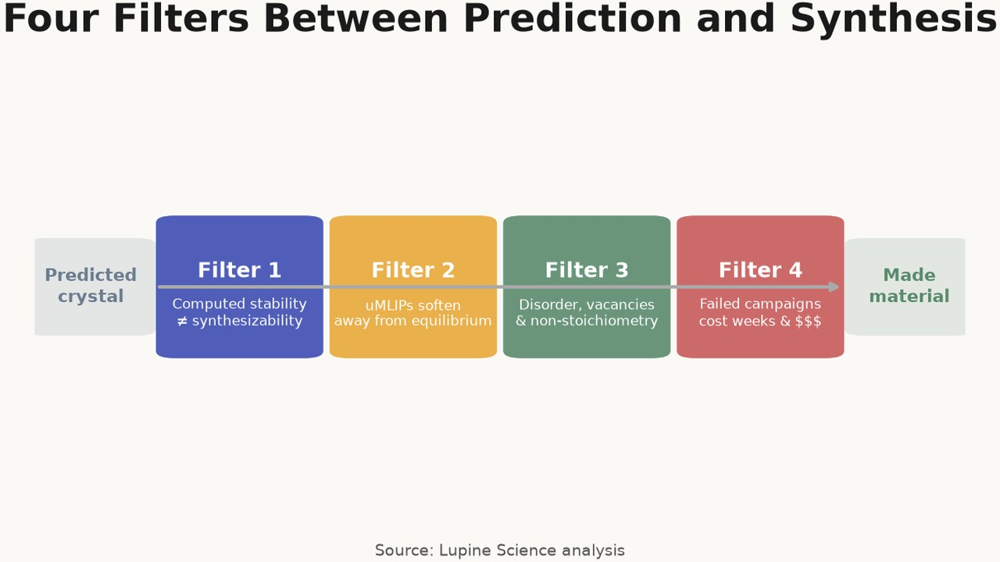
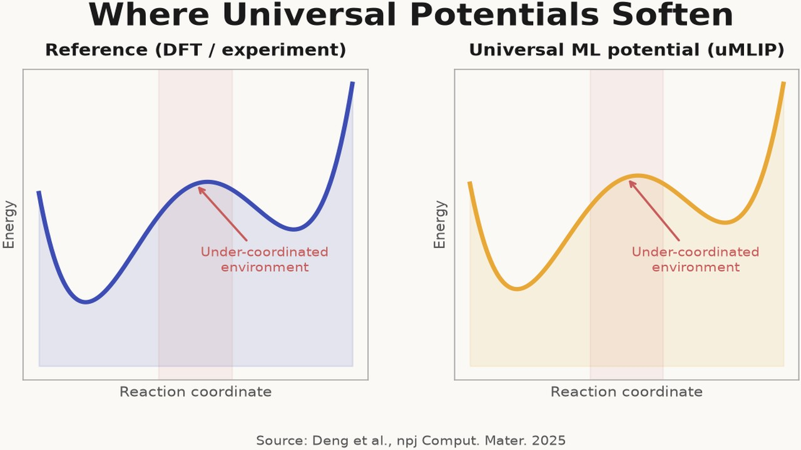
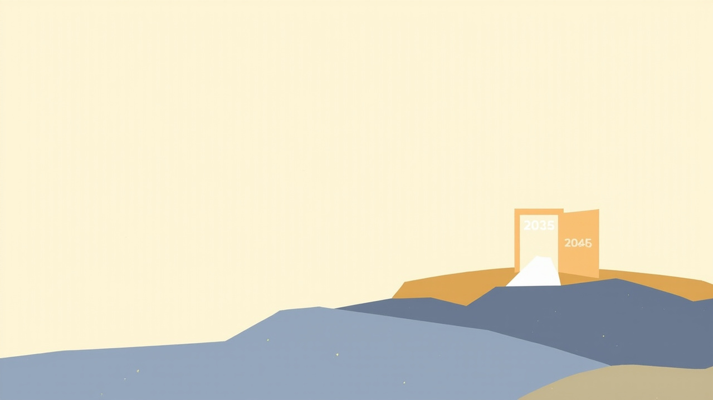
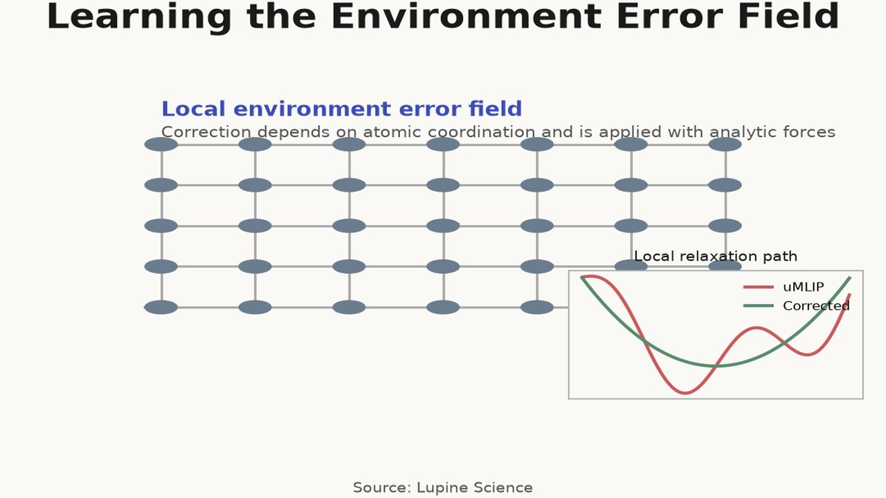
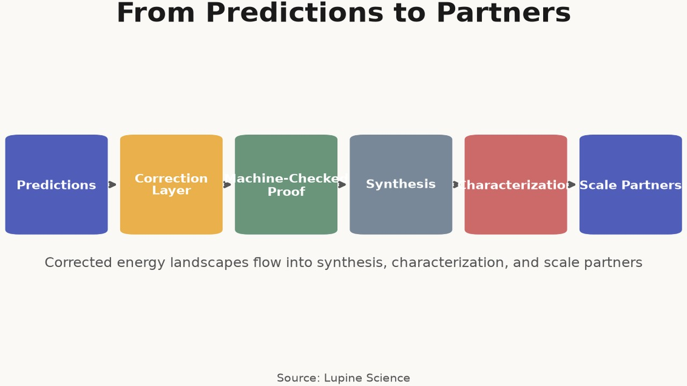

The 0.2% Synthesis Problem
Why most AI-predicted materials never reach a lab
The gap

Of 380,000 computationally stable structures reported by GNoME, only 736 had been independently synthesized by late 2023 — a 0.2% validation rate.
Four filters

Four structural filters separate a predicted crystal from a made material.
Filter 1 & 2

Universal machine-learning interatomic potentials systematically soften the potential energy surface away from equilibrium.
Filter 2
 A 100 meV barrier error changes ionic hopping rates by roughly 50× at room temperature — enough to misclassify a conductor as an insulator.
A 100 meV barrier error changes ionic hopping rates by roughly 50× at room temperature — enough to misclassify a conductor as an insulator.
Filter 3 & 4
 Enforcing the four filters would flag roughly three-quarters of predictions before they reach a furnace.
Enforcing the four filters would flag roughly three-quarters of predictions before they reach a furnace.
Beyond the lab
 Cobalt-free cathodes remove a supply-chain chokepoint, while clean-energy investment must more than double this decade.
Cobalt-free cathodes remove a supply-chain chokepoint, while clean-energy investment must more than double this decade.
The window

A material discovered too late cannot recover cumulative emissions already locked in.
Lupine's approach

Lupine applies a local environment error field at runtime so molecular dynamics follows corrected gradients.
The result
 Corrected screening must feed partners who are already scaling cobalt-free cathodes and solid-state cells.
Corrected screening must feed partners who are already scaling cobalt-free cathodes and solid-state cells.
The goal

Corrected predictions must flow into synthesis, characterization, and scale partners — not into another generation cycle.